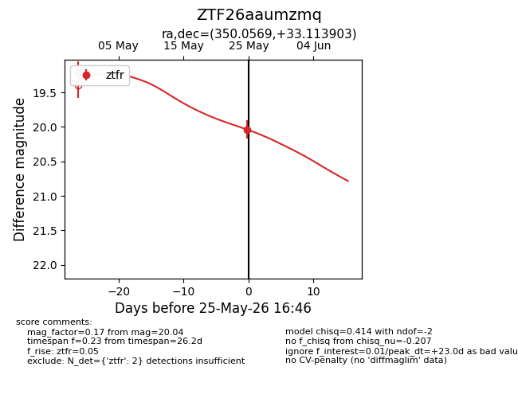
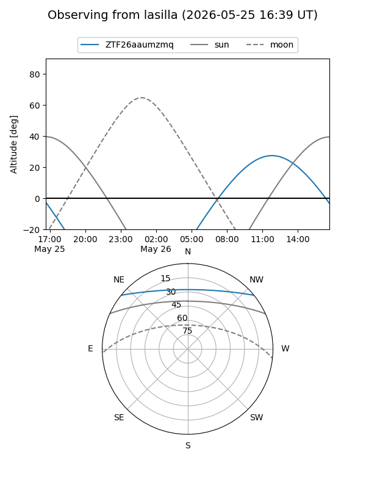
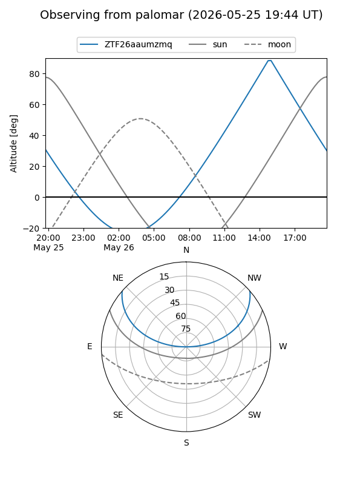
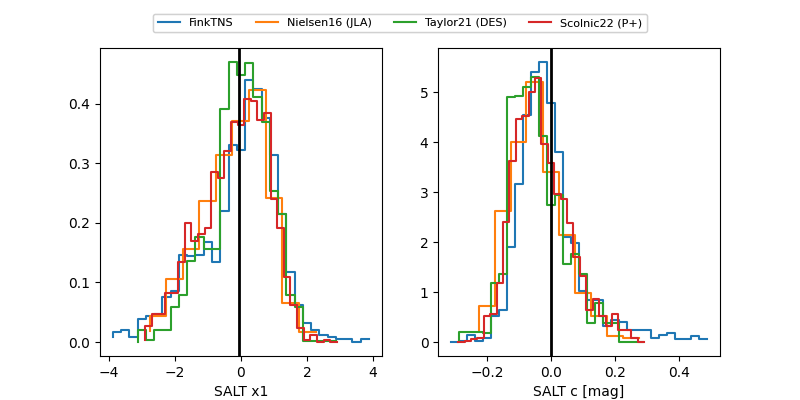

ZTF26aaumzmq
Target ZTF26aaumzmq at 2026-05-25 16:48
Aliases and brokers:
lsst-FINK: link
lsst-Lasair: link
lsst-ALeRCE: link
ztf-FINK: link
ztf-Lasair: link
ztf-ALeRCE: link
alt names
ZTF26aaumzmq (ztf,fink_ztf)
Coordinates:
equatorial (ra, dec) = 350.0569,+33.11390
equatorial (HMS+DMS) = 23:20:13.66,+33:06:50.05
galactic (l, b) = (101.7638,-25.98119)
Flags:
Photometry:
last ztfr=20.04
2 ztfr detections
Lightcurve

Visibility


Additional plots
